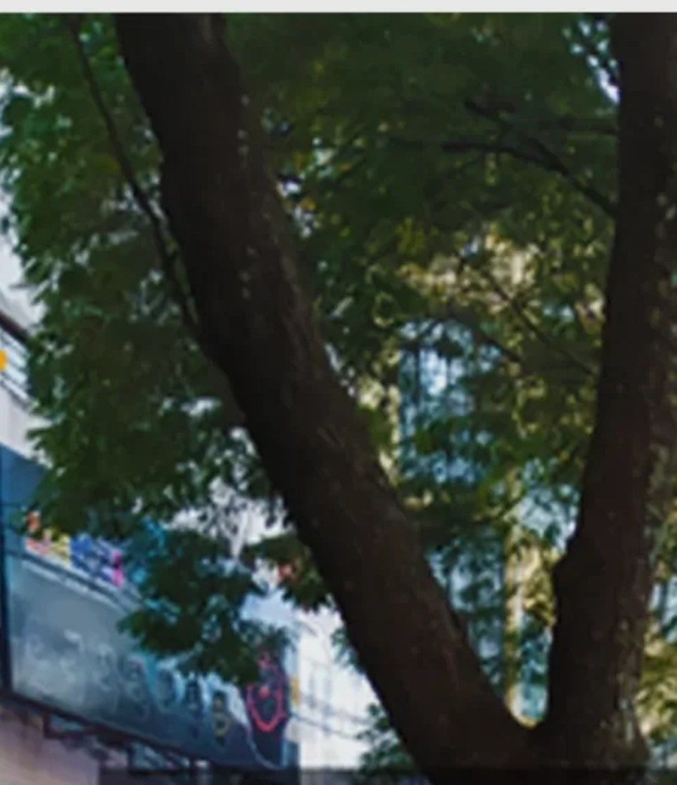

Un problème dans l'espace public ?
Signalez-le en 3 minutes, sans créer de compte. Vous suivrez son état avec une référence.
La référence s'affiche à l'écran juste après l'envoi. Vous pouvez aussi la retrouver dans le SMS ou le courriel que vous avez demandé.
Prototype non fonctionnel — données de démonstration.
Opérateur du service, responsable de traitement et hébergement à confirmer.
Choisissez la catégorie qui correspond le mieux au constat. Une seule réponse est possible.


Conservez-la : elle est la seule façon de retrouver votre dossier sans créer de compte.
Un agent peut demander une précision. Si vous avez laissé un contact, il sera utilisé uniquement pour vous répondre.
Pour le prototype : essayez SPBF-9JKP-44TN (transmis) ou SPBF-7K4M-92QX (en vérification).
Numéro publié par l'opérateur national de l'eau. À revérifier avant publication.
Guichet virtuel et numéro vert de l'opérateur national d'électricité. À revérifier avant publication.